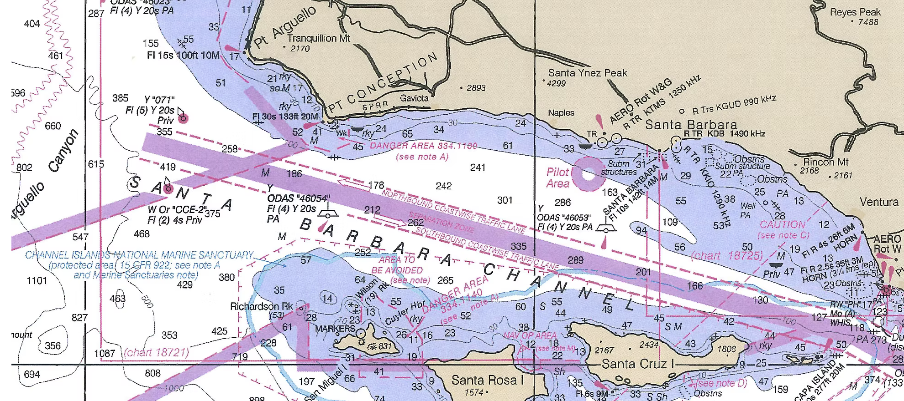

Santa Barbara Sea Charters
Finaddict
Everything you need to know before boarding. Don't see your question? Reach out to Captain Jim directly.
Finaddict is conveniently located at Santa Barbara Harbor — Marina 2, Slip B-2. It will be at the bottom of the ramp on the left. A gate secures access to the Marina II docks — Captain Jim will escort you through.
Take the 101 to Santa Barbara. Take the Garden Street Exit and head toward the ocean on Garden Street. Turn right onto Cabrillo Boulevard at the beach. Continue on Cabrillo until you pass Los Banos Pool on the left, then turn left into the harbor.
Take the first left in the harbor into the parking lot. Take a ticket at the kiosk and find a parking space. The first building on the right is the restroom for Marina II. Wait at the gate — we will escort you through. Finaddict is in Slip B-2 at the bottom of the ramp on the left.
Take the 101 to Santa Barbara. Take the Castillo Street Exit and head toward the ocean on Castillo Street. Turn right onto Cabrillo Boulevard at the beach, then turn left into the harbor.
Take the first left in the harbor into the parking lot. Take a ticket at the kiosk and find a parking space. The first building on the right is the restroom for Marina II. Wait at the gate — we will escort you through. Finaddict is in Slip B-2 at the bottom of the ramp on the left.
Yes. A fishing license is required for any trip where fish or game are taken. Anyone over the age of 16 must have a valid California fishing license.
Licenses may be obtained from the California Department of Fish & Game or purchased at the Sea Landing.
No — we supply fishing tackle and gear if you do not bring your own. We also clean and fillet your fish to take home, and always keep your catch on ice throughout the trip.

The most common injuries on boats come from slipping on a wet deck. Rubber-soled footwear is strongly recommended. Please avoid high heels, mid heels, or leather soles — they are not permitted on the boat.
A selection of soft drinks and filtered water. We do not provide or sell alcoholic beverages, but you are welcome to bring whatever you'd like to drink.
There is ample space for refrigerated items. Generally, ice chests are not allowed on Finaddict for safety reasons. Food and catering services can be arranged — just let us know in advance.
Pricing varies depending on season, trip length, and other factors. Please contact us directly for pricing information and availability.
A 50% deposit is required when booking. Please reach out by phone or email to confirm availability and reserve your date.
All crew members participate in a random drug screening program and are trained in the operation and mechanics of Finaddict. The Coast Guard has zero tolerance for drugs and firearms on charter boats — Santa Barbara Sea Charters strictly enforces all Coast Guard policies.
Finaddict undergoes annual voluntary U.S. Coast Guard inspections and carries fire and safety equipment that exceeds minimum requirements.
We recommend taking seasickness medication before you board — it is much more effective taken preventatively. Common options include Dramamine, Bonine, and scopolamine patches. Your pharmacist or physician can advise on the best option for you.
Yes. For any charter that involves passengers stepping off the boat — including diving, snorkeling, and swimming — each passenger must sign a waiver releasing Santa Barbara Sea Charters of liability when not physically on board.